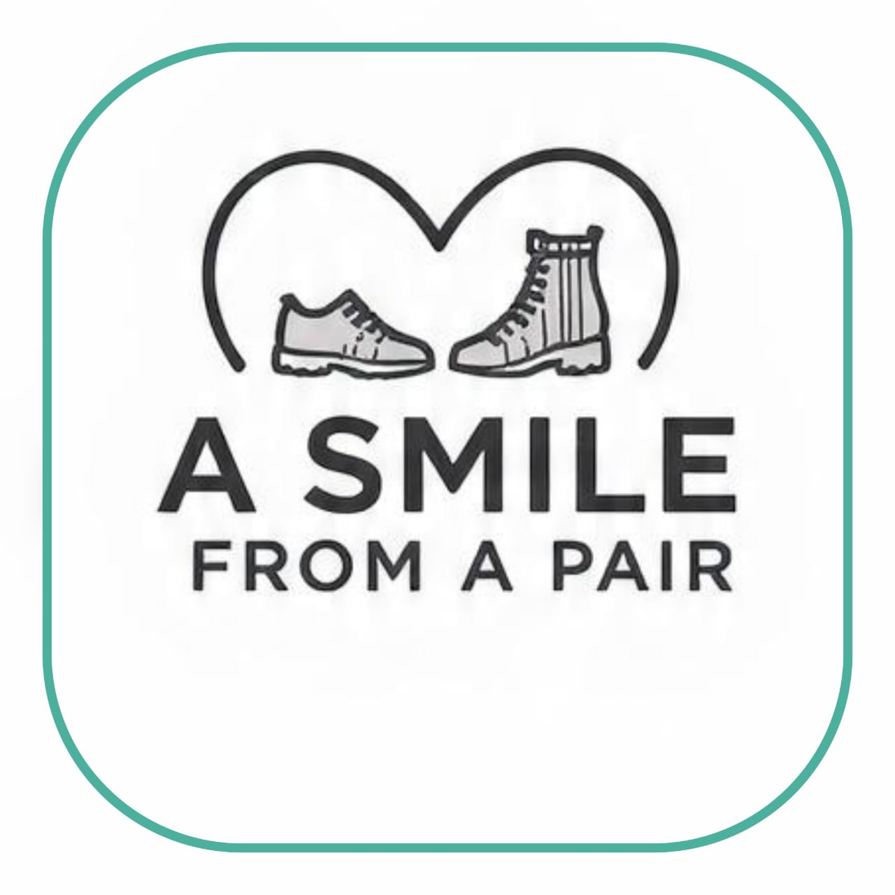
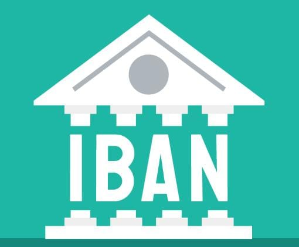

*Divine District Assembly* was established on 29th December 2021.
We serve as the restoration arm of mityana district. As a non-profit body, our focus is to represent the people of mityana and promote development and empowerment at the grassroot level.
We stand in alignment with the C.A.R.E | Center for Armity and Restoration of The Earth.
We are dedicated to setting up community development assemblies across mityana district to elevate community standards and implement the restoration plan based on natural law.
Our Community development assemblies serve as platforms for citizens to come together, discuss their needs, and collaborate on actionable plans that address local issues. By harnessing collective wisdom, we can create meaningful change.
No boss but associations of equal people who want to transform the lives of the residents of their various communities for the better.
Kimberly Ann Goguen is the guardian of the planet, it's under her authority that we establish our assemblies. She has secured our freedom and sovereignty from the order that has held us in bondage for lifetime.
Now at this moment we have the opportunity to arm our rights as sovereign beings and establish a framework for self governance and the restoration of earth.
*Kim holds multiple leadership roles, including:*
1. Universal Protection Unit Command (Ground Command/ Guardian)
2. Ambassador to Earth for the Universal Council for this version of Homosapiens/Humanity.
3. Director of Global Intelligence Agency (GIA) Clearance level 74/75.
4. Computroller of currencies worldwide.
5. Founder of the Unitednetwork.earth
6. Head of the C.A.R.E| Center for Armity and Restoration of the Earth.
The overall mission or goal in the C.A.R.E movement is to use our energies in restoring this lovely planet called, Earth. the movement is dedicated to returning this planet to what our Creator/God intended it to originally be before it came under attack by certain unseen forces human agents whom you’ll eventually get to know about as you take some time to watch the many videos which are shared in this website unitednetwork.earth
I guess the first question that immediately springs to your mind is what I mean when I say, “restoring our planet to where we think it should be?” By the way, how is it possible that we can do this? First of all, the C.A.R.E movement is strictly a SPIRITUAL group and we’re strongly anchored in the Divine work of our Creator Source/God.
Let me just confess by saying that I don’t know about you the religious people but I can evidently say that the Creator Source/God is real and not imaginary as many religions have been telling their followers for thousands of years. And because of our group’s unwavering abidance in who the Creator Source/God truly is, we have not gone wrong with whatever we’ve been doing on this journey for some time now. It’ll excite you to know that our Creator Source/God finally heard the cries of His people and accepted pleads for mercy and liberation after hundreds of thousands of years. He therefore moved to sign a new covenant with His suffering people right after accepting our pleads for help not very long ago.
As a result, He canceled every contract that the dark forces and their human agents have placed on all humanity unbeknownst to us for hundreds of thousands of years and this new covenant with humanity became effective from December 2012.
I’m sure some of you who have been following the developments in the world must have heard about what the former controllers referred to as “Y2K” where they said that the world was going to end whereby all of us were going to die and there would be no more planet Earth. Truth being told, it was actually the end of the dark forces and human agents world and not for us, the loving children of Source the Creator/God. So the hundreds of thousands of years of human suffering and enslavement timeline has changed in our favor now.
It’s interesting how they said that the world was going be over at that time and all of us were going to die. Remember the Biblical apocalypse? But here we are as human beings exactly ten long years after all the fear of the world ending which was circulated in the media by the former controllers and their satanic agents. In fact, the world’s population since that time has grown more 10% even though these evil creatures have been subjecting us to unnecessary wars, pestilence and diseases such as AIDS, Ebola and recently, the scamdemic called Covid. Yet the world population currently stands at 8 billion people and we have not all died yet.
To add to what I said earlier, the result of the new covenant with the Creator Source/God, now returns every power back to we the members of the human family including our freedom where no other human being wields anymore power and authority over the others except the Creator Source/God who is the ONE and only KING in the universe. Among some of the powers that the Creator Source/God took away from the dark controllers and their human agents are the assets or wealth of the world.
These assets are now being managed by the leader of our movement C.A.R.E Kimberly Ann Goguen. Kimberly's only plan is to return all this wealth directly back to the people instead of through the so-called governments as was the case in the old system. But, in order to carry out this plan, the people of the world must organize themselves at the community level where they are required to put forth project proposals which they know are near and dear to their communities heart. These projects must be geared towards eradicating poverty permanently by improving the living conditions of the people of world once and for all.
_CALL FOR PROPOSALS | MITYANA REGION_
Community assemblies are invited to submit proposals to:mityana.projects@protonmail.com
We invite all residents of Mityana District to join our Community assemblies and be part of the movement towards self governance. Your participation is crucial for the success of our restoration plans.

A Smile from a Pair is a vital community outreach operating under the Divine District Assembly in Mityana, Uganda. Our slogan Give a Shoes, Restore Hope.By collecting and distributing quality shoe donations to vulnerable individuals, the initiative provides critical foot protection, restores personal dignity, and promotes wellness and opportunity throughout the region.
Protection: Safety on long, rough walks.
Confidence: Pride in the community.
Dignity: The fundamental feeling of being valued and cared for.
A simple pair of shoes may seem small, but to someone else, it means dignity, confidence, and the feeling of being loved. You didn’t just give shoes—you restored hope.
Sometimes the smallest things make the biggest difference. Your single act of kindness brings warmth, comfort, and a happy smile to someone in need.
For distribution of donated shoes- comprehensive training provided,commit to measurable impact
- Financial or in-kind shoe donations may not be feasible for all supporters.
- If donating shoes isn’t an option, there are other meaningful ways to help.
- A monetary donation is another way to contribute. Your support enables us to:
- Collect, clean, and prepare shoes for distribution.
- Reach communities with limited access to proper footwear
- Cover logistics and transportation costs to deliver donations
- Expand our outreach programs year-round
Every contribution, regardless of size, moves us closer to that goal.
We accept MTN Mobile Money and Airtel Money. Tap to see number.
*Donate Globally → PayPal | IBAN*
*Support from Anywhere*
We welcome international donations. Give securely via PayPal or IBAN. Your gift provides shoes, dignity, and opportunity to vulnerable people.
